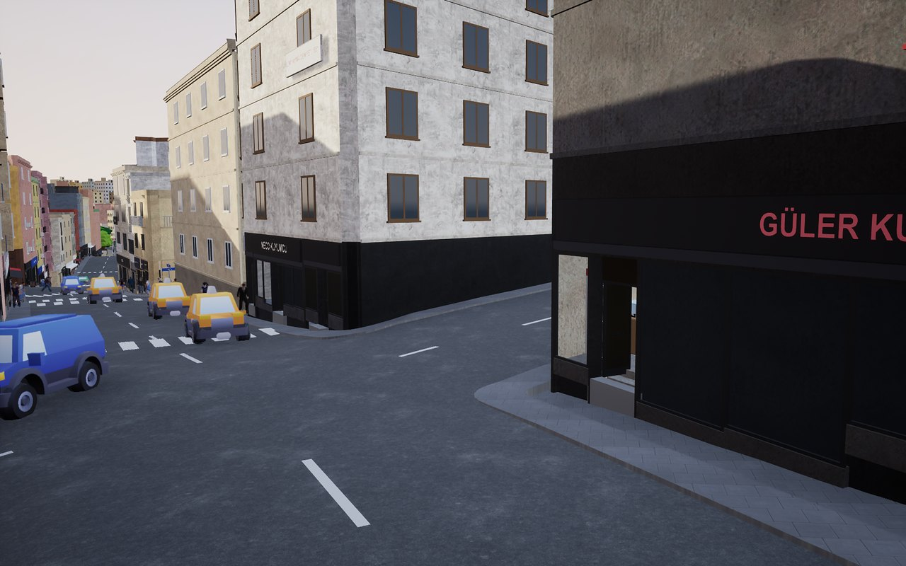
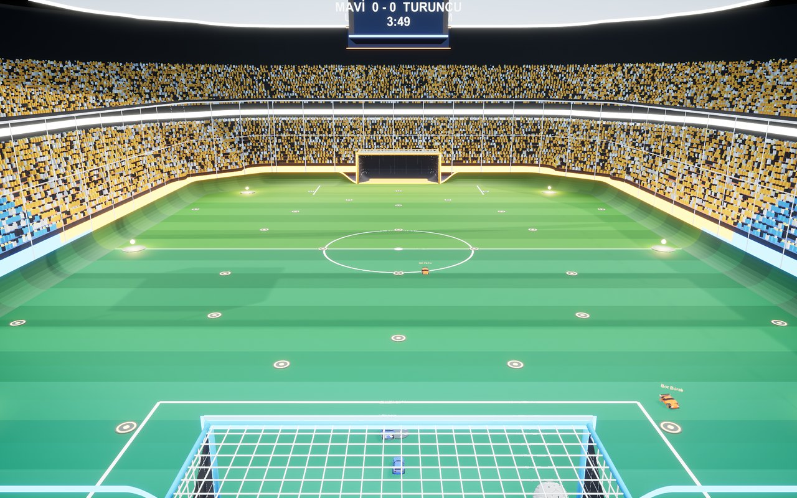
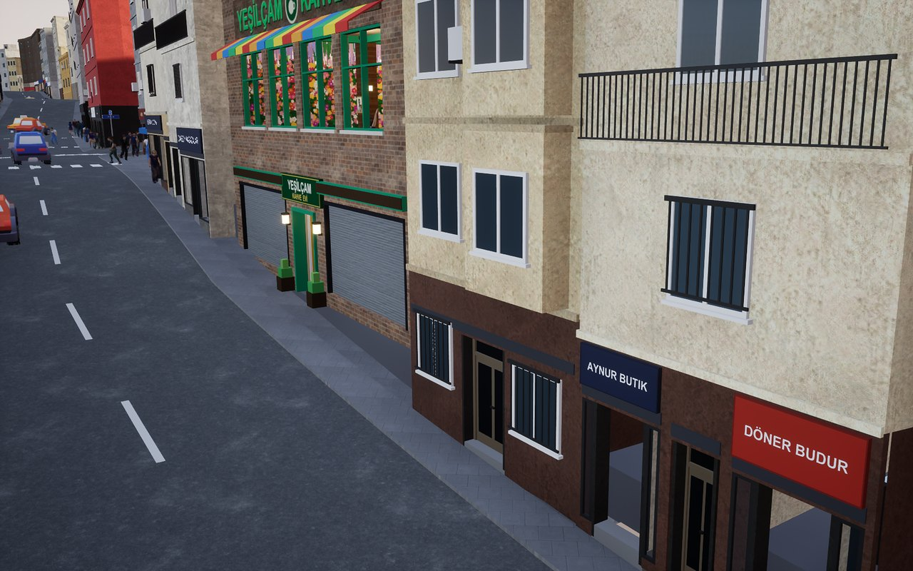
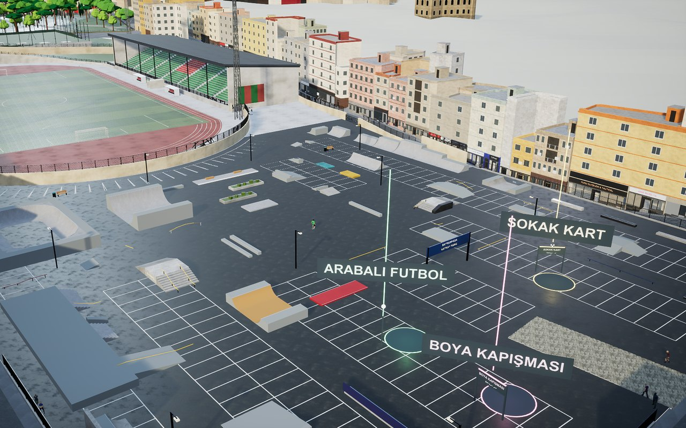
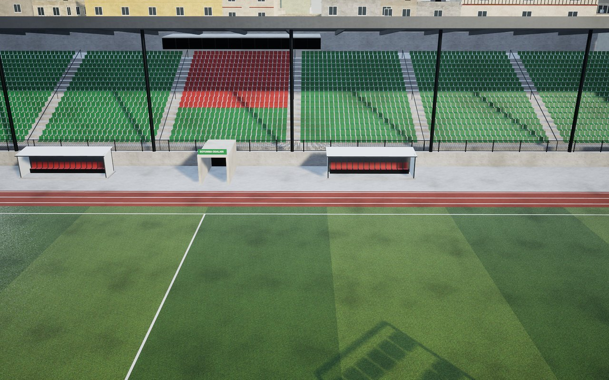
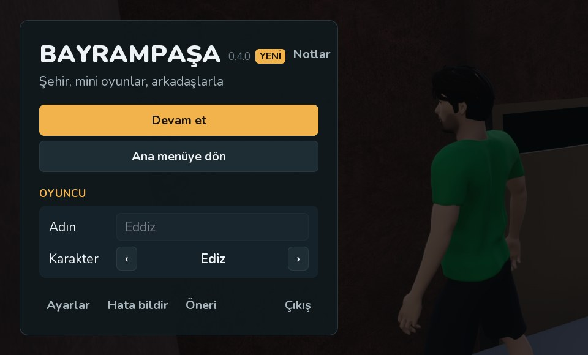

Bayrampaşa sokaklarında geçen, arkadaşlarla oynanan bir açık dünya. Şehir kendi kendine yaşıyor;
sen de istediğin köşede bir oyun başlatıyorsun. Kâr amacı gütmeyen bir arkadaş projesi, şu an test aşamasında.

Yaşayan şehir
Trafik, yürüyen insanlar, dükkânlar, polis, gece ve gündüz. Haritası gerçek Bayrampaşa'dan.

Arabalı futbol
Takviye, zıplama, havada takla, duvarda sürüş. Dolu tribünler, skor tabelası, iki takım.

Yeşilçam kafe
Garsonlar dolaşır, müşteriler gelir oturur. Çay ocağı, çiçekli duvar, eski film havası; masalarda altı oyun.

Mini oyunlar
Boya Kapışması, Bomba Sende, Zemin Gidiyor, Çatı Kapışması, Mahalle Yakantopu, Eşya Saklambacı, Go-kart, Sokak Kart,
Polis – Hırsız, Metroya Yetiş ve dahası.

Tanıdık yerler
Çetin Emeç Stadı, okullar, hastane, camiler, parklar ve gerçek dükkân adlarıyla caddeler. Kendi sokağını bul.

İnternet odaları
Biri oda kurar, diğerleri listeden katılır. Radmin, VPN, port açma, hesap yok. Odada en çok 12 kişi.